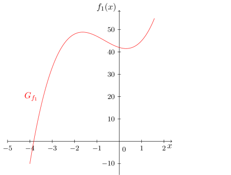
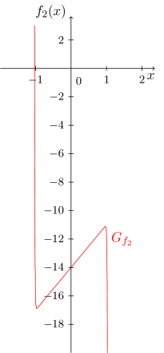
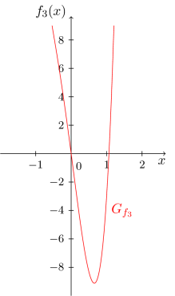
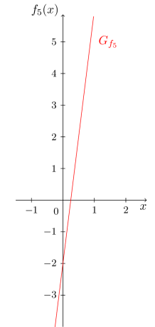
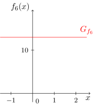

Onlinekurs Mathematik - Elementare Funktionen - Lineare Funktionen und Polynome
6.2.6 Polynome und ihre Nullstellen
Während in den bis jetzt betrachteten Monomen immer nur genau eine Potenz der Veränderlichen in der Abbildungsvorschrift vorkommt,
lassen sich aus diesen Monomen problemlos komplexere Funktionen konstruieren in denen mehrere verschiedene Potenzen der Veränderlichen vorkommen.
Diese ergeben sich als Summen von Vielfachen von Monomen. Man spricht dann von sogenannten Polynomen; hier einige Beispiele und deren Graphen:





Der Grad eines Polynoms richtet sich also nach dem vorkommenden Monom mit dem höchsten Grad. Außerdem erkennen wir, dass die bisher behandelten Funktionstypen der konstanten, linearen und linear-affinen Funktionen - genauso wie die Monome - auf natürliche Weise wieder als Spezialfälle der Polynome auftauchen. Die Polynome umfassen also alle bisher betrachteten Funktionstypen.
Möchte man allgemein ein unspezfiziertes Polynom vom Grad angeben, so schreibt man dies folgendermaßen:
Dabei sind mit die reellen Vorfaktoren vor den einzelnen Monomen, die als Koeffizienten des Polynoms bezeichnet werden.
Aufgabe 6.2.12
Wie lautet das Polynom mit den Koeffizienten , und und welchen Wertebereich besitzt es?
Das Polynom lautet
,
sein Wertebereich ist
.
Die Kreiszahl kann als pi und der Wertebereich als Intervall eingegeben werden.
Das Polynom lautet
und besitzt den Wertebereich , da die geraden Potenzen von nur nichtnegative Werte annehmen können.
Bei allgemeinen Polynomen sind insbesondere die Nullstellen von Interesse. Diese findet man durch das Lösen
von Gleichungen -ten Grades. Für den Grad , also für Polynome vom Grad (diese werden auch als allgemeine Parabeln bezeichnet),
ist dies durch das Lösen einer quadratischen Gleichung möglich. In Modul 2 werden die relevanten Techniken
der quadratischen Ergänzung, der und der Scheitelpunktsform
quadratischer Ausdrücke genauer erklärt.
Beispiel
6.2.13
Gegeben ist die Parabel
Wir bestimmen Nullstellen und Scheitelpunkt und zeichnen den Graphen.
Wir führen an der Abbildungsvorschrift eine quadratische Ergänzung durch:
Folglich läßt sich die Abbildungsvorschrift als
schreiben. Wir erkennen, dass die Parabel gegenüber der Standardparabel um Längeneinheiten nach rechts und nach unten verschoben ist. Der Scheitelpunkt läßt sich bei ablesen. Die Nullstellen lassen sich berechnen:

 Kursinhalt
Kursinhalt Einführung
Einführung Mein Kurs
Mein Kurs Einstellungen
Einstellungen Eingangstest
Eingangstest Suche
Suche Das KIT
Das KIT Feedback
Feedback Beta-Version
Beta-Version